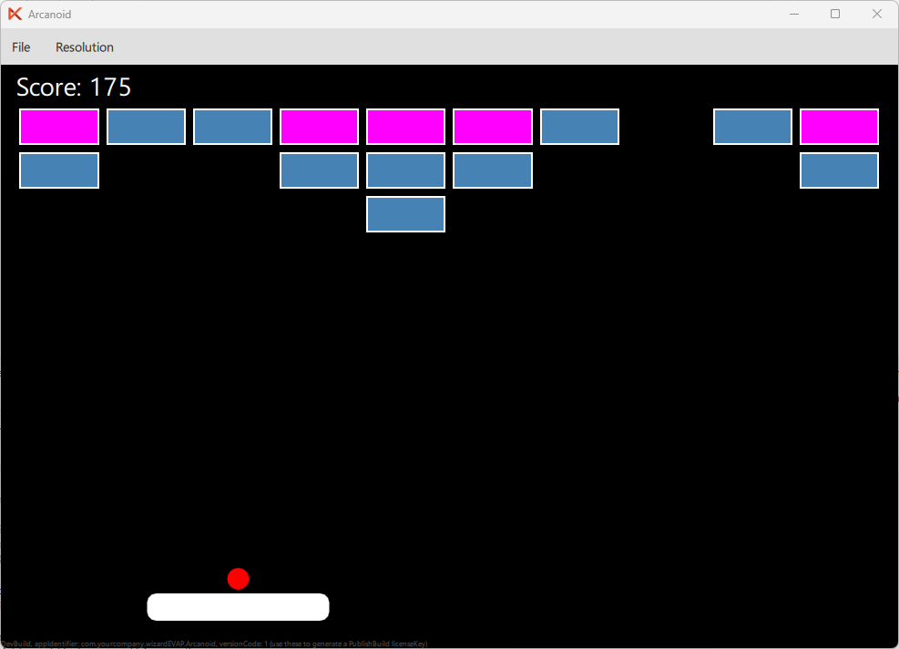

In this part of the tutorial, we will extend our Arcanoid game by adding hit points to the bricks. Every hit will decrease hit point value of the brick. The brick is destroyed when its hit counter drops to 0.
Create a new Brick.qml file and put it next to Main.qml first:
import QtQuick 2.0 Rectangle { id: brick border.color: "white" property int hitPoints: 1 property bool destroyed: false color: hitPoints >= 2 ? "magenta" : "steelblue" visible: !destroyed function hit() { hitPoints -= 1 if (hitPoints <= 0) { destroyed = true return 10 } if (hitPoints >= 1) return 5 return 0 } }
Here we have defined a hitPoints variable which determines how many hits the brick can take before it gets destroyed.
We have also added a hit() function which will decrease the hit points and return the score value for the hit (10 points if the brick was destroyed, 5 if there are still hitPoints left, and 0 otherwise).
Additionally, we set the color of the brick to magenta if it has 2 or more hit points, and change it to steelblue otherwise.
Update the Repeater in Main.qml to use the new Brick component so that the 1st row of bricks has 2 hit points and the rest have 1 hit point:
// Bricks Repeater { id: bricks model: bricks.cols * bricks.rows property int cols: 10 property int rows: 3 property real brickSpacing: 4 property real brickWidth: (gameArea.width - (cols + 1) * brickSpacing) / cols property real brickHeight: 20 Brick { width: bricks.brickWidth height: bricks.brickHeight property int col: index % bricks.cols property int row: Math.floor(index / bricks.cols) hitPoints: row === 0 ? 2 : 1 x: bricks.brickSpacing + col * (bricks.brickWidth + bricks.brickSpacing) y: bricks.brickSpacing + row * (bricks.brickHeight + bricks.brickSpacing) + 20 } }
To keep the code clean, we will add a collides() function to the Brick component in Brick.qml which will check if the ball is colliding with the brick.
bx, by, bw, bh parameters of the function represent the x and y coordinates of the ball and its width and height respectively.
function collides(bx, by, bw, bh) { if (destroyed) return false return bx < brick.x + brick.width && bx + bw > brick.x && by < brick.y + brick.height && by + bh > brick.y }
As the last step, update collision logic in the Timer to use the collides() function to check if the brick was hit and afterwards hit() function to increment the score:
// Brick collisions for (let i = 0; i < bricks.count; i++) { let item = bricks.itemAt(i) if (item && item.collides(ball.x, ball.y, ball.width, ball.height)) { gameArea.score += item.hit() ball.ballSpeedY *= -1 break } }
